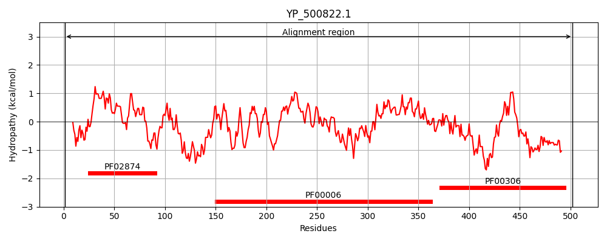
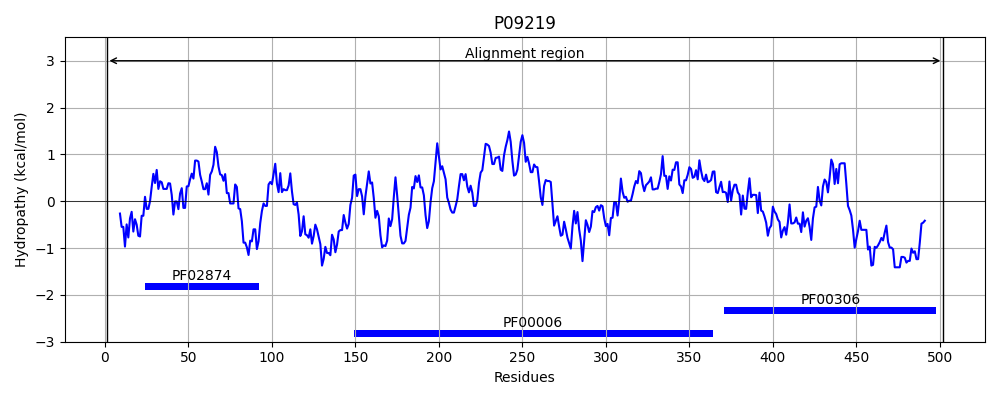
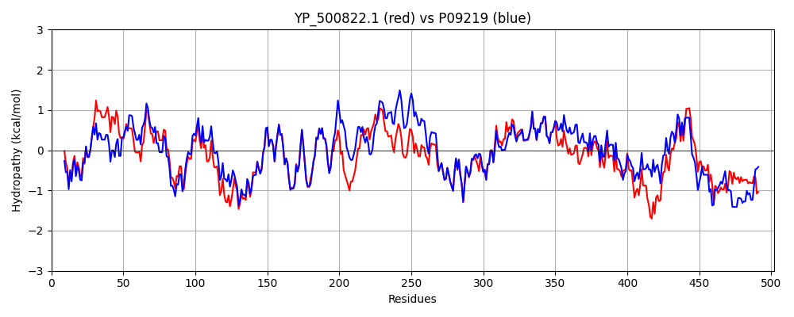

Hit Accession: P09219
Hit TCID: 3.A.2.1.14
Hit Description: gnl|BL_ORD_ID|8502 gnl|TC-DB|P09219|3.A.2.1.14 ATP synthase subunit alpha OS=Bacillus sp. (strain PS3) OX=2334 GN=atpA PE=1 SV=1
Mach Len: 502
e:0.000000
Query TMS Count : 0
Hit TMS Count: 0
TMS-Overlap Score: 0.000000
Predicted Substrates:CHEBI:5584;hydron
BLAST Alignment:
Score: 1948 , Bit scores: 754 bits, E-value: 0.0e+00, Alignment length: 502, Percentage identity: 75
Query: 1 MAIKAEEISALLRSQIENYESEMSVTDVGTVLQIGDGIALIHGLNDVMAGELVEFHNGVLGLAQNLEESNVGVVILGPYTGITEGDEVKRTGRIMEVPVGEELIGRVVNPLGQPIDGQGPINTTKTRPVEKKATGVMDRKSVDEPLQTGIKAIDALVPIGRGQRELIIGDRQTGKTTIAIDTILNQKDQGTICIYVAIGQKDSTVRANVEKLRQAGALDYTIVVAASASEPSPLLYIAPYSGVTMGEEFMFNGKHVLIVYDDLTKQAAAYRELSLLLRRPPGREAYPGDVFYLHSRLLERAAKLNDDLGGGSITALPIIETQAGDISAYVPTNVISITDGQIFLQSDLFFSGVRPAINAGQSVSRVGGSAQIKAMKKVAGTLRLDLASYRELESFAQFGSDLDEFTASKLERGKRTVEVLKQDQNKPLPVEHQVLIIYALTKGYLDDIPVVDITRFEDELNHWAESNATELLNEIRETGGLPDAEKFDTAINEFKKSFSKSE 502
M+I+AEEISAL++ QIENYES++ V+DVGTV+Q+GDGIA HGL++VM+GE VEF N V+G+A NLEE+NVG+VILGPYTGI EGDEV+RTGRIMEVPVGE LIGRVVNPLGQP+DG GP+ TT+TRP+E +A GVMDR+SV EPLQTGIKAIDALVPIGRGQRELIIGDRQTGKT++AIDTI+NQKDQ ICIYVAIGQK+STV VE L + GA DYTIVV ASAS+P+PLL++APY+GV MGE FM GKHVL+V DDL+KQAAAYR+LSLLLRRPPGREAYPGD+FYLHSRLLERAAKL+D GGGS+TALP +ETQAGDISAY+PTNVISITDGQIFLQSDLFFSGVRPAINAG SVSRVGG+AQIKAMKKVAGTLRLDLA+YRELE+FAQFGSDLD+ T + + RG RTVEVLKQD ++P+PVE QVLIIYALT+G+LDDIPV D+ RFE E W + N LL IR T LP+ + + AI FKK+F S+
Sbjct: 1 MSIRAEEISALIKQQIENYESQIQVSDVGTVIQVGDGIARAHGLDNVMSGEAVEFANAVMGMALNLEENNVGIVILGPYTGIKEGDEVRRTGRIMEVPVGETLIGRVVNPLGQPVDGLGPVETTETRPIESRAPGVMDRRSVHEPLQTGIKAIDALVPIGRGQRELIIGDRQTGKTSVAIDTIINQKDQNMICIYVAIGQKESTVATVVETLAKHGAPDYTIVVTASASQPAPLLFLAPYAGVAMGEYFMIMGKHVLVVIDDLSKQAAAYRQLSLLLRRPPGREAYPGDIFYLHSRLLERAAKLSDAKGGGSLTALPFVETQAGDISAYIPTNVISITDGQIFLQSDLFFSGVRPAINAGLSVSRVGGAAQIKAMKKVAGTLRLDLAAYRELEAFAQFGSDLDKATQANVARGARTVEVLKQDLHQPIPVEKQVLIIYALTRGFLDDIPVEDVRRFEKEFYLWLDQNGQHLLEHIRTTKDLPNEDDLNQAIEAFKKTFVVSQ 502 | Protein Hydropathy Plots: |
|---|
|  |  |
Pairwise Alignment-Hydropathy Plot:
|
|---|
|  |